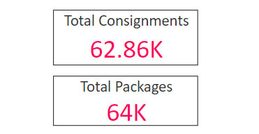

Shipping Location Performance
The Shipping Location Performance report

Report Filters
The Shipping Location Performance report offers the following report-wide filters:
- Date Shipped - enables you to select only those consignments that were shipped within a given date range.
- Company Name - where applicable, enables you to select only those consignments that were shipped by a particular company within your group. You can select multiple companies if required.
- Shipping Location - where applicable, enables you to select only those consignments that were shipped from a particular shipping location.
- Carrier - enables you to select only those consignments that were shipped via a particular carrier.
- Carrier Service - enables you to select only those consignments that were shipped via a particular carrier service.
- Delivery Type - enables you to select only those consignments that were shipped as a particular delivery type (i.e. Delivery or Click and Collect).
Data Table
Visualisation Filters
More Options
The data table has the following options available from its More Options menu:
Average Days to Ship Over Time

Visualisation Filters
More Options
The Average Days to Ship Over Time chart has the following options available from its More Options menu:
Consignments by Shipping Location

Visualisation Filters
More Options
The Consignments by Shipping Location chart has the following options available from its More Options menu:
- Open Comments
- Export Data
- Show Data
- Spotlight
- Sort Descending
- Sort Ascending
- Sort by Shipping Location / Consignments
Carrier Usage

Visualisation Filters
More Options
The Carrier Usage chart has the following options available from its More Options menu:
Average Days to Ship to Shipping Location

Visualisation Filters
More Options
The Average Days to Ship to Shipping Location chart has the following options available from its More Options menu:
- Open Comments
- Export Data
- Show Data
- Spotlight
- Sort Descending
- Sort Ascending
- Sort by Shipping Location / Average Days to Ship
Consignments by Shipping Location Over Time

Visualisation Filters
More Options
The Consignments by Shipping Location Over Time chart has the following options available from its More Options menu: